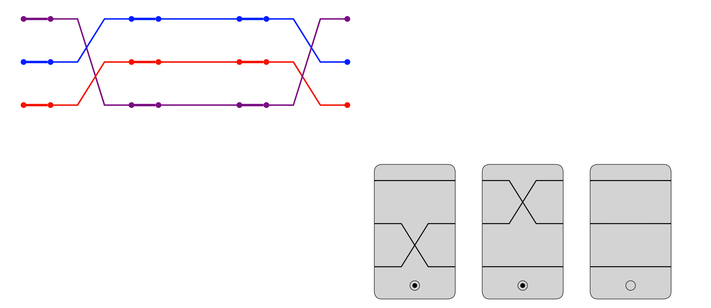
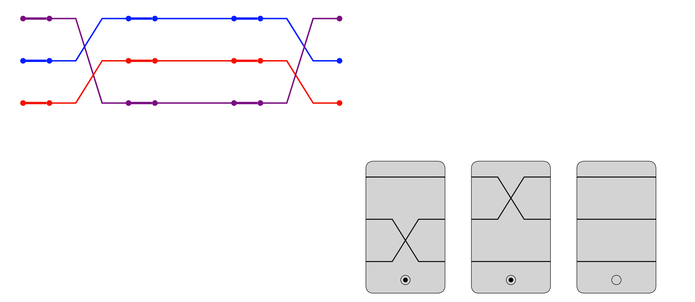

Nonabelian Set

The famous game of SET has a few interesting mathematical interpretations. It can be thought of as finding geometric patters (using tools of projective geometry), or as finding arithmetic ones (using tools of group theory). Fantastic work of Cathy Hsu, Jonah Otroff, and Lucas Van Meter, explores these perspectives, and creates really fun variations of the game in both directions. You can check out several of them here, and even find printable cards to play yourself. They also wrote a nice paper about the project which was the cover story for the Math Horizons April 2020 Issue.
One of these versions takes place in the symmetric group Sn, where the player combines permutations to get the identity. At ICERM's Illustrating Mathematics program we laser cut these permutations onto tiles to play with directly, and I would say that much fun was had. These tiles appear in the AMS book Illustrating Mathematics edited by Diana Davis.">Illustrating Mathematics edited by Diana Davis.
When I was first asked what I thought about the game (at this point still in its paper variant), I suggested colors to more easily follows the lines, before I realized that on paper that wouldn't make sense. Apparently this was a common suggestion, so I went about trying to code it up in javascript. Click the links below to play an online varient of the game for the groups S3 and S4. Keep in mind this is a work in progress. If you find any bugs or have any comments don't hesitate to reach out!
S3 version
S4 version
Here are a few in game screenshots, as well as some photos of the beautiful wooden tiles.


 
